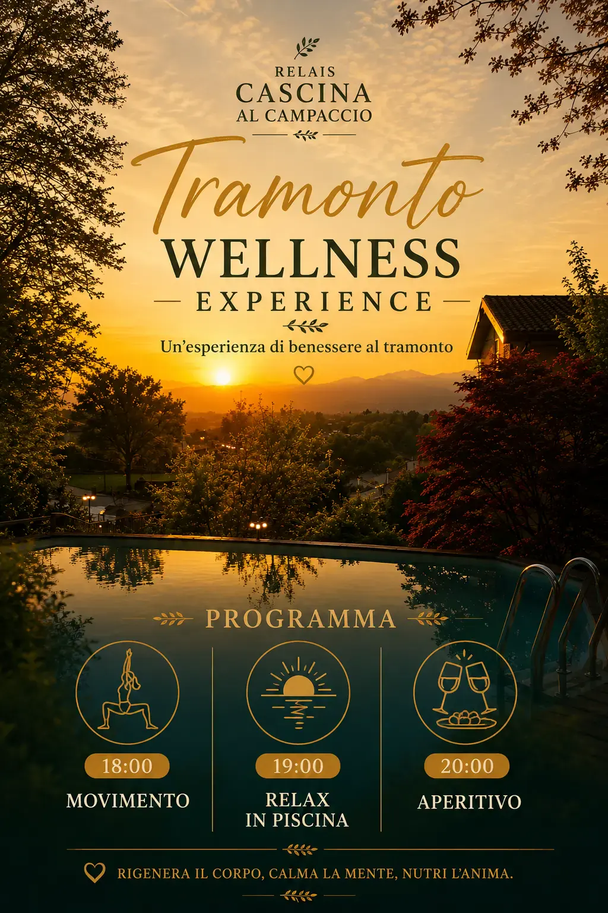

Ritrovo e accoglienza
Ci incontreremo al Relais Cascina al Campaccio, in una location immersa nella natura con splendida vista sul Lago Maggiore. Dopo una breve presentazione ci prepareremo insieme.
Un’esperienza di benessere sul Lago Maggiore pensata per rigenerare il corpo, calmare la mente e concederti qualche ora dedicata interamente a te.

Ci incontreremo al Relais Cascina al Campaccio, in una location immersa nella natura con splendida vista sul Lago Maggiore. Dopo una breve presentazione ci prepareremo insieme.
Una sessione di circa un’ora, adatta a diversi livelli, con esercizi di tonificazione, mobilità e respirazione e particolare attenzione alla corretta esecuzione.
Tecniche semplici di respirazione, mobilità dolce e consapevolezza corporea per lasciare andare le tensioni. Non è necessario saper nuotare.
Concluderemo con un aperitivo offerto mentre il sole tramonta sul Lago Maggiore: un momento informale e accogliente da condividere.
La sessione può essere svolta anche in costume, con pantaloncini e maglietta. Sono disponibili due docce esterne.
È pensata per chi desidera concedersi una pausa, muoversi in modo piacevole e vivere un momento dedicato al proprio benessere.
Non è necessario essere particolarmente allenate: gli esercizi vengono adattati.
Alcuni momenti delle precedenti Wellness Experience al Relais Cascina al Campaccio.
Per mantenere l’esperienza raccolta, personalizzata e piacevole, il numero di partecipanti è limitato.
Vuoi essere aggiornata sui prossimi eventi? Entra nella Community WhatsApp.